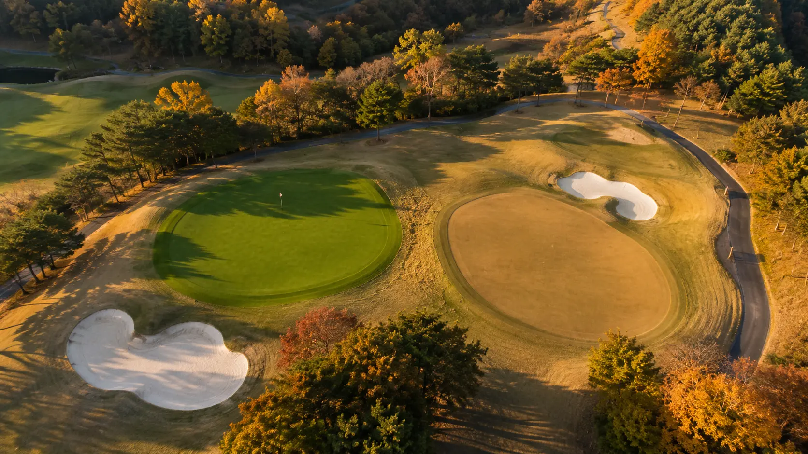

한국의 1호 골프장은 "효창원 골프장"으로 알려져 있다. 1921년 지금의 효창공원 자리에 개장했던 9홀 코스는 조선철도국이 설립하고 영국인 'H.E Daunt'가 설계한 것으로 기록된 골프장이다. 대한민국 1호 골프장은 1924년 효창원이 효창공원으로 변경되면서 얼마 지나지 않아 폐쇄되었다.

이후 평양, 부산, 대구 등에 9홀 규모의 골프장이 생겨났고, 국내 최초의 18홀 골프장인 경성골프클럽의 "군자리코스"는 일본인 '아카보시'의 설계로 1930년 현재 서울 어린이대공원 자리에 건립되었다.
세계 제2차대전, 6.25전쟁을 거치며 훼손된 군자리코스는 이승만 대통령의 지시에 따라 1954년 한국 1호 프로골퍼 '연덕춘'의 설계로 복원되었으며, 사단법인 서울컨트리클럽이 운영하게 되었다는 기록이 있다.
영친왕에 의해 건립되고 이승만 대통령에 의해 복원되었으며 골프광이었던 박정희 대통령에 의해 주로 이용되던 "군자리코스"는 제1회 한국 프로골프 선수권 등 각종 대회를 개최하는 등 국내 골퍼 양성의 산실이 되었다. 1960~70년대 골프장 인근이 개발되면서 박정희 대통령은 미래의 주역인 어린이들이 뛰어놀 공간이 필요하다며 해당 부지를 현재의 어린이대공원으로 조성하기를 지시한다. 이에 따라 군자리코스는 18년 만에 역사의 뒤안길로 사라지게 된다.
일본에서 시작된 한국의 골프, 그리고 투그린의 도입
한국 골프의 시작은 일제강점기였다. 최초의 18홀 골프장이 일본인에 의해 설계되었으며, 일본 오픈에서 우승하며 명성을 얻은 '연덕춘'이 한국전쟁 이후 한양CC, 부평씨사이드CC(현 인천국제CC), 동래CC(현 동래베네스트CC) 등 다수의 초창기 골프장을 설계하게 된다.
박정희 대통령의 지시로 건립된 제주CC(현 더시에나 제주 CC)는 현재 운영 중인 골프장 중 한양CC를 제외하고 가장 오래된 골프장으로서, 제주CC 역시 '연덕춘'에 의해 설계되었다.
골프 문화를 일본으로부터 흡수한 대한민국의 골프는 일본의 직접적인 영향을 받을 수밖에 없었다.
이노우에 세이이치 — 일본 근대 골프코스 설계의 아버지
1930년대 후반부터 1970년대까지 활발히 활동하며 일본 각지에 40개 이상의 코스를 설계했다. 국내에서 1971년에 건립된 '남서울CC'를 설계하기도 한 그는, 일본의 기후인 고온다습한 여름과 추운 겨울에 대응하기 위해 1939년 'Kasumigaseki Country Club'에 최초로 여름용 그린(Bent grass)과 겨울용 그린(Korai grass)을 갖는 두 개의 그린 시스템을 도입하였다.
이는 기후 환경이 유사한 우리나라 초기의 골프장 설계에 큰 영향을 미쳤다.
본격적으로 일본 골프코스 설계사가 국내에 인입된 계기는 삼성의 창업주 이병철 회장이 1968년 최초의 고급 회원제 골프장인 '안양CC'를 '미야자와 조헤이'를 초청하여 설계하면서부터이다.
이후 1990년대 이전까지 대부분의 골프장을 일본과 일본에서 영향을 받은 한국 설계사가 설계하였으며, Two-green 시스템을 차용하였다. 이에 따라 1980년대까지 건립된 대부분의 골프장은 투그린이며, 미국의 골프코스 설계사가 인입되기 시작한 1990년대부터는 원그린과 투그린이 복합적으로 설계되었으며, 2000년대 들어서는 대부분 원그린 시스템으로 전환되었다.
그렇기 때문에 지금까지도 수도권이나 경주, 부산권의 전통이 있는 회원제 골프클럽들은 대부분 투그린 시스템이며, 1989년 미국 골프코스 설계사 '로버트 트렌트 존스 주니어'에 의해 설계된 용평CC로부터 건립되기 시작된 강원도의 골프장 및 기타 지역 신생 골프장들은 원그린 시스템이다.
한국 골프 코스의 100년 — 주요 이정표
한국 골프 100년 연표
1921년 효창원부터 2026년 수서CC까지, 코스 설계의 흐름과 투그린 시스템의 등장·소멸·부활
- 2026수서CC (대구 군위) 오픈 예정 — 투그린 시스템 적용
- 최근투그린 시스템 재조명 — 인서울 27, 베르힐, 포웰CC, 일라이트CC, 고령오펠GC, 베이스타즈CC, 아라미르 등 부활
- 2000s대부분 골프장이 원그린 시스템으로 전환
- 1989용평CC(로버트 트렌트 존스 주니어 설계) — 미국 설계사 본격 인입
- 1971남서울CC — 이노우에 세이이치 설계
- 1968안양CC(미야자와 조헤이 설계) — 최초의 고급 회원제, 이병철 회장
- 1954군자리코스 복원 — 이승만 대통령 지시, 연덕춘 설계
- 1939일본 Kasumigaseki Country Club에 투그린 시스템 최초 도입 (이노우에 세이이치)
- 1930경성골프클럽 군자리코스 개장 — 국내 최초 18홀, 아카보시 설계
- 1921효창원 골프장 개장 — 한국 1호 골프장, 9홀, H.E Daunt 설계
왜 원그린으로 바뀌었는가
투그린 시스템에서 원그린 시스템으로 변경된 이유는 골프 문화를 이끄는 미국의 골프코스 설계사의 영향도 있지만, 두 개의 그린을 관리하는 데 있어서 많은 비용이 발생하고, 미적인 부분에서의 마이너스 요소와 플레이에 혼란을 줄 수 있다는 단점 때문이다. 또한 잔디 관리 기술이 발전하면서 기후에 따른 투그린 시스템이 큰 효용을 가지지 못한다는 의견이다.
| 구분 | 과거의 투그린 (1980s 이전) | 지금의 투그린 (재조명) |
|---|---|---|
| 도입 이유 | 기후 대응 (여름·겨울 잔디 분리) | 전략적·경험적 다양성 |
| 운영 방식 | 계절별 그린 사용 | 번갈아 사용 + 휴지·수리 유연성 |
| 미적 요소 | 단점으로 인식 | 설계 단계부터 장점화 |
| 플레이 가치 | 혼란 요소 | 다양한 전략·경험 제공 |
| 잔디 관리 | 기술 한계로 필수 | 선택적 차별화 요소 |
최근의 투그린 — 목적이 바뀌었다
이런 투그린 설계가 최근 들어 다시 조명받으며 투그린 골프장이 증가하고 있다.
- 인서울 27골프클럽 — 서울 강서구
- 베르힐 컨트리클럽 영종 — 인천
- 포웰CC 안성 — 경기도
- 일라이트 CC — 충북 영동
- 고령오펠 GC — 경북
- 베이스타즈 CC — 울산
- 아라미르 골프&리조트 — 창원
모두 최근 10년 내에 준공된 골프장들이다. 지금의 투그린은 계절의 영향에 따른 불가피한 선택이 아니라, 두 개의 그린을 번갈아 가며 이용함에 따라 그린 컨디션을 유지시키고, 하나의 그린을 휴지하거나 수리하는 경우에 코스 운영 지속에 따른 관리의 유연성을 제공한다.
또한 투그린의 목적이 달라졌기 때문에 과거에 단점으로 여겨졌던 미적 요소도 고려하여 설계함으로써 장점으로 전환이 가능하다. 두 개의 그린을 통한 다양한 전략적·경험적 요소를 제공할 수 있다는 점은 무시할 수 없는 옵션 사항이다.
2026년 — 수서CC의 등장
대구광역시 군위읍 수서리에 활발히 공사 중인 "수서CC" 역시 투그린 시스템을 적용한다.
뛰어난 도시 접근성, 그리고 투그린 시스템과 숙박시설을 통해 다양한 경험적 요소를 제공할 예정인 수서CC는 2026년 상반기에 오픈 예정인 골프장으로서, 지역사회에서 기대를 한몸에 받는 골프장이기도 하다.
향후 투그린 시스템의 변화와 발전을 기대해 본다.